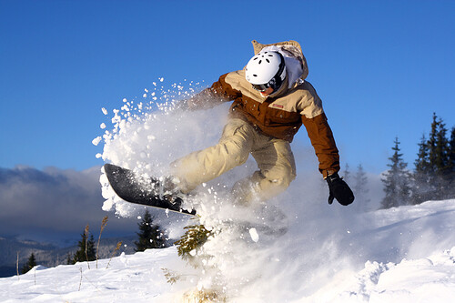
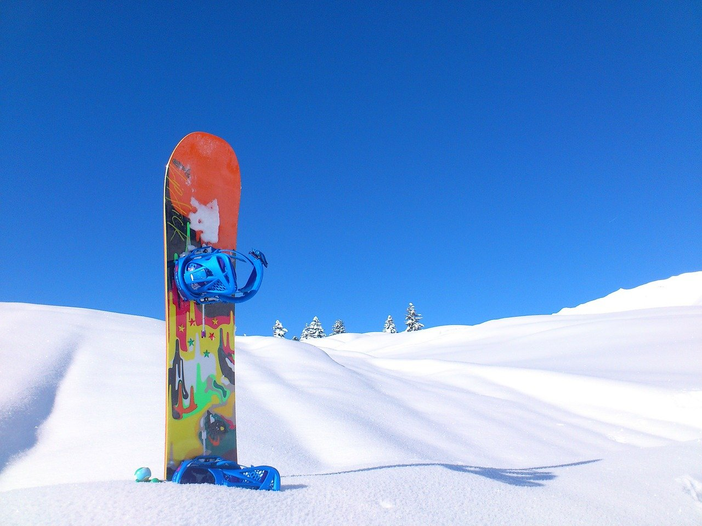
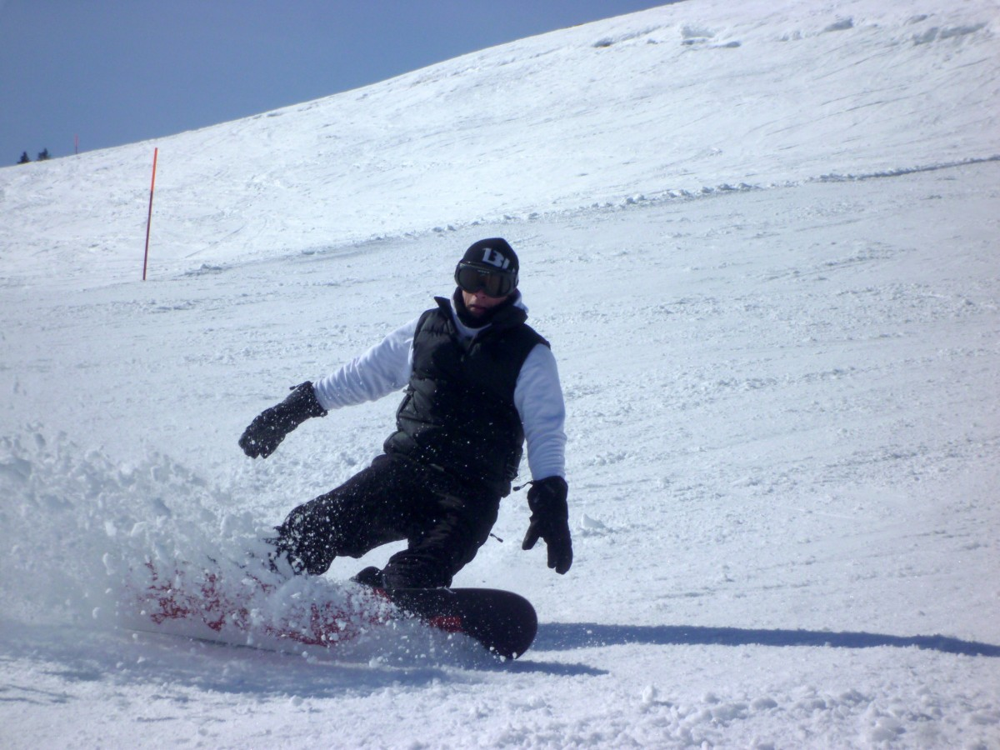
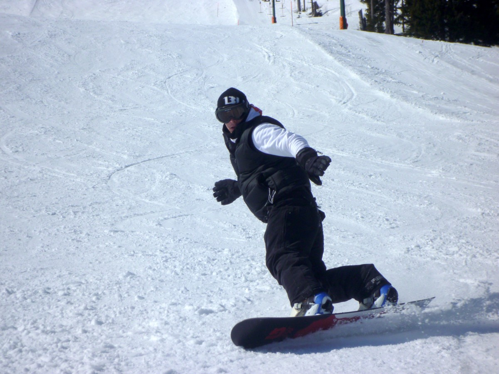
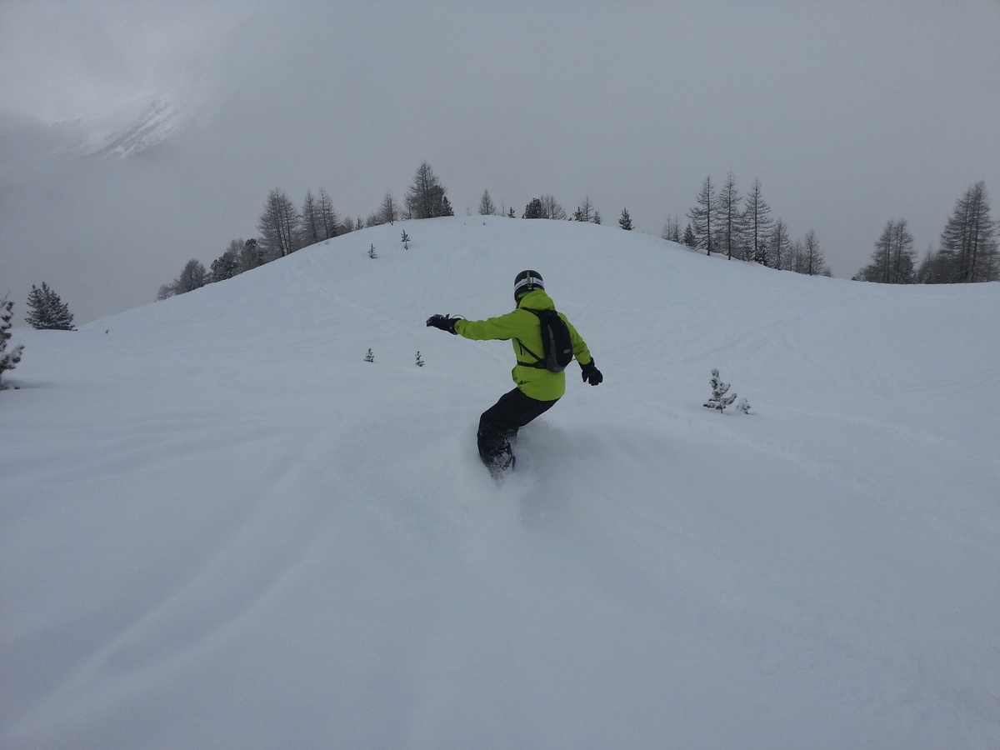

Snowboarding is a great way to spend your time during the cold winter months. It's engaging and it’s a sport you can learn and do by yourself. If you are someone that enjoys being active and loves the winter then snowboarding is the perfect fit for you. Even if you are a surfer or skateboarder you may want to try this winter sport out to get you a full year experience of boarding as it can improve your balance for those two as well. This webpage will go over the basics of snowboarding and give you an idea on how to get started up.

The first thing you need to learn once you start to snowboard is how to gear up and strap into the board. We first want to start with your boots. When picking out your boots you want to make sure that your foot is completely snugged in there and tight but also comfortable at the same time. You want to make sure that the boot is comfortable because after a long day of snowboarding the boot can start to cause some discomfort from all the stress you are putting on it. When lacing up you, I personally like to tighten my boots to the max, so I have maximum control when I’m snowboarding down the mountain. The next thing you want to focus on is strapping into the board. For starters, it's best to sit down and strap in as it will be easier for you. When strapping in you want to start with the foot strap first. I recommend tightening it as much as you can first then loosening it up to your comfort but still keeping it tight. This will give you full control of the board when you start. Next, you want to strap in your toe side, again tighten as much as you can, and then loosen for comfort.
Skating
The next step of the learning process is to learn how to skate with your board. This is when you keep one foot unstrapped and use it to push around, similar to skateboarding. This will help you get from point a to b on flat surfaces and when loading onto the lift. Basically, use one foot to push the board and use the one that is strapped into the board to direct it. Once you push off place your other foot in the binding unstrapped. This will allow you to go short distances without taking your board off.

Heel Side

Toe Side

The next thing you want to learn is your heel and toe side. These will be the basics of turning and stopping. When you first start going down the mountain, you want your board to be horizontal to the mountain with you facing downwards. Practice going down like this and digging your heels in to stop. Once you get the stopping down, you can start leaning to one side and work on moving from left and right on your heel side. Once you get that down it's time to turn around and practice on your toe side. Basically, the same idea but instead you are looking up the mountain digging your toes in. Again, practice stopping and moving from side to side. Once you feel comfortable with your toe and heel side it’s time to start practicing turning.

Turning
Turning is going to be the hardest part of all of this but once you learn it you have understood the concepts of basic snowboarding and from there on out it's all about building balance and confidence. When turning you want to start from your toe or heel side. In this case, we will start on our heel side. To start your turn you want to gradually put more pressure on one foot turning the front of the board down the hill. You will start to notice that you are picking up speed which will help you get to your toe side. When going straight down you want to start to lean on your toes and almost look up the mountain. This will force the board to turn going on your toe side. If you did this correctly you should have made an S formation. This part will take lots of practice, but again, once you learn this you have learned the basics of snowboarding. Constantly practice from going heel side to toe side and then toe side to heel side.
Once you have learned the basics, push yourself to try harder and harder things. This will allow you to grow your balance, speed, and confidence. A good thing to remember compared to skiing is that skiing is easier to learn but harder to master. Snowboarding is harder to learn but easier to master. So once you have learned the basics you have gotten past the hard part and now the main goal is just to get more comfortable with your board.